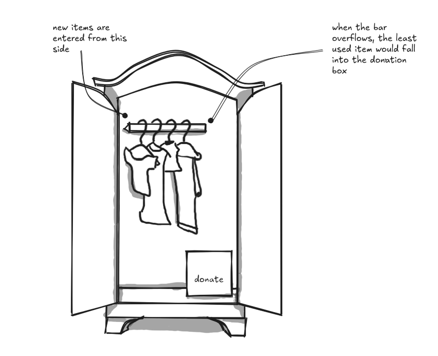
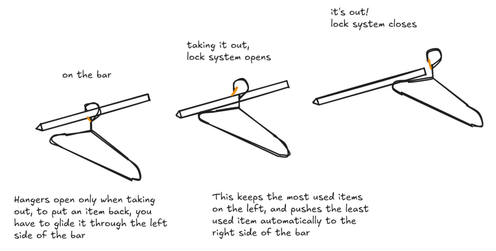

Smart Wardrobe: Adressing digital over-consumption through physical design
This project started from a very familiar place: doom‑scrolling through online shops, convincing myself I “needed” a few new pieces, and then feeling awful afterwards. I realised my problem wasn’t that I owned nothing to wear, it was that the digital side made it way too easy to ignore what was already in my closet. I wanted a solution that didn’t live on yet another screen, didn’t send me more notifications, and didn’t ask for more self‑discipline than I realistically have.
So I imagined a wardrobe that quietly enforces its own limits. Inside, there’s a single bar where every hanger has to slide in from the same side. Each time I wear something and put it back, it re‑enters from that side, which means my most‑used clothes naturally stay close to the “entrance” while the least‑used ones slowly migrate to the far end. When the bar is full and I try to add something new, the item at the opposite end is pushed off and drops into a donation box. No pop‑ups, no guilt‑trippy stats—just a very clear, physical “if this comes in, something else has to go.”
 I built a cardboard prototype to test the idea with a few people. Users instinctively tried to insert hangers from the wrong side, hesitated when items dropped into the donation area, and some even reacted with “I’d hate to lose my clothes like this.” Their behavior showed that the wardrobe made the cost of “just one more item” feel concrete, instead of burying it under free shipping and easy returns, and it highlighted that tension between wanting new things and not wanting to let go which is exactly what this project is about.

You can take items out from anywhere on the bar

You can only put an item back from the left side of the bar

Once the bar is full, adding new items would make the least used item fall into the donation box

The donation box is closed after each drop to prevent you from taking the items out of it When the box is full, a notification is sent to the donation center to come pick the box up !